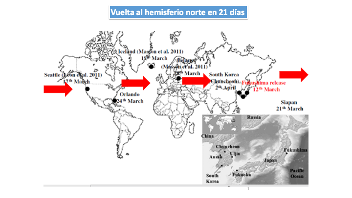
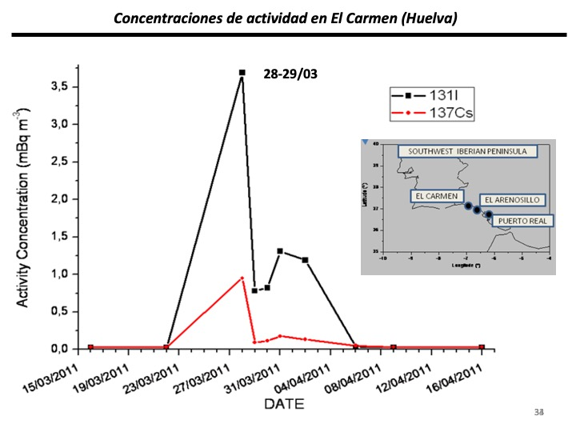

Esos elementos radiactivos liberados en las explosiones se adhirieron a los aerosoles atmosféricos y luego transportados por el viento a miles de kilómetros de distancia. A esa nube radiactiva se le llama PLUMA RADIACTIVA: cuando los aerosoles caen por efecto gravitatorio o por la lluvia, o la nieve... contaminan también los suelos y las aguas, creando un grave problema de salud ambiental para todos los seres vivos.


En la actualidad existe una gran polémica porque el Gobierno de Japón ha decidido verter al mar el agua que se usó para enfriar los reactores en los días y meses posteriores al accidente. La historia de este accidente aun no ha terminado...
Puedes ver un vídeo más amplio sobre este accidente pinchando aquí.